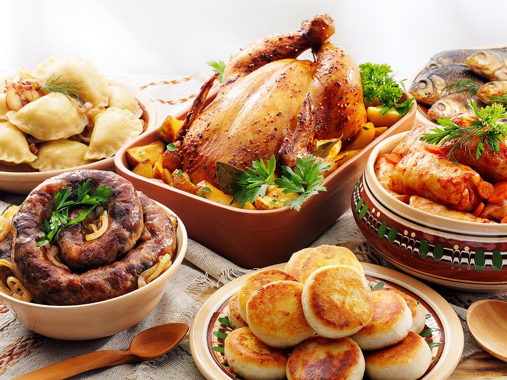

Домашняя кулинария
Мир домашней кухни уникальный.
Сколько удивительных рецептов одного и того же блюда можно найти, просто посещая разные семьи. Возьмем, к примеру, наш всеми любимый салат Оливье. Мы знаем какие продукты в него входят и в каждой семье они вроде бы одинаковые. Но кто-то использует докторскую колбасу, кто-то курицу, кто-то кладет лук, кто-то не кладет морковь, кто-то кладет яблоко, у кого-то больше картошки, а кто-то использует ее по минимуму. Кто-то заливает тонной майонеза, а кто-то добавляет еще и сметану. И это касается любой пищи. Это и есть настоящее искусство. Меню домашней кухни безгранично
